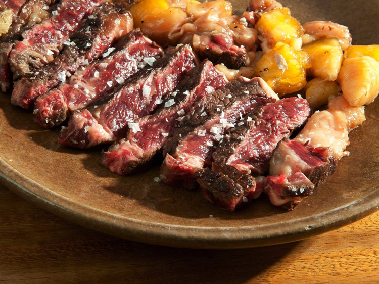

Estás en: Inicio › Gastronomía
Gastronomía de Ávila
La provincia de Ávila ofrece una gastronomía contundente y tradicional, marcada por su clima de montaña y sus productos de gran calidad reconocidos a nivel nacional.

Platos más representativos
Los platos más populares de la cocina abulense, ordenados de mayor a menor reconocimiento:
- Chuletón de Ávila
- Judías del Barco de Ávila con chorizo
- Patatas revolconas
- Yemas de Santa Teresa
Productos típicos
La despensa abulense se sustenta en productos de la tierra de gran calidad:
-
Carnes
- Ternera de Ávila (IGP)
- Cordero churro
- Cerdo ibérico de la sierra
- Legumbres: judías del Barco de Ávila (IGP) y garbanzos de la comarca
- Repostería: yemas de Santa Teresa, perrunillas y tortas de anís
Glosario gastronómico
- Chuletón de Ávila
- Chuleta de gran tamaño procedente de la ternera con Indicación Geográfica Protegida de Ávila. Se sirve a la parrilla, con la carne rosada en su interior y una costra dorada exterior.
- Patatas revolconas
- Plato tradicional elaborado con patatas cocidas y majadas, aliñadas con pimentón ahumado y aceite de oliva. Se suelen acompañar con torreznos crujientes.
- Yemas de Santa Teresa
- Dulce típico de Ávila elaborado con yema de huevo y azúcar, con una textura suave y un sabor intenso. Su nombre rinde homenaje a Santa Teresa de Jesús, patrona de la ciudad.
- Judías del Barco de Ávila
- Legumbre con Indicación Geográfica Protegida cultivada en el valle del Tormes. De piel fina y textura cremosa, son la base del cocido abulense y los potajes de invierno.
Temporada de los platos típicos
| Plato | Temporada |
|---|---|
| Chuletón de Ávila | Todo el año |
| Judías del Barco con chorizo | Otoño e invierno |
| Patatas revolconas | Todo el año |
| Yemas de Santa Teresa | Todo el año |